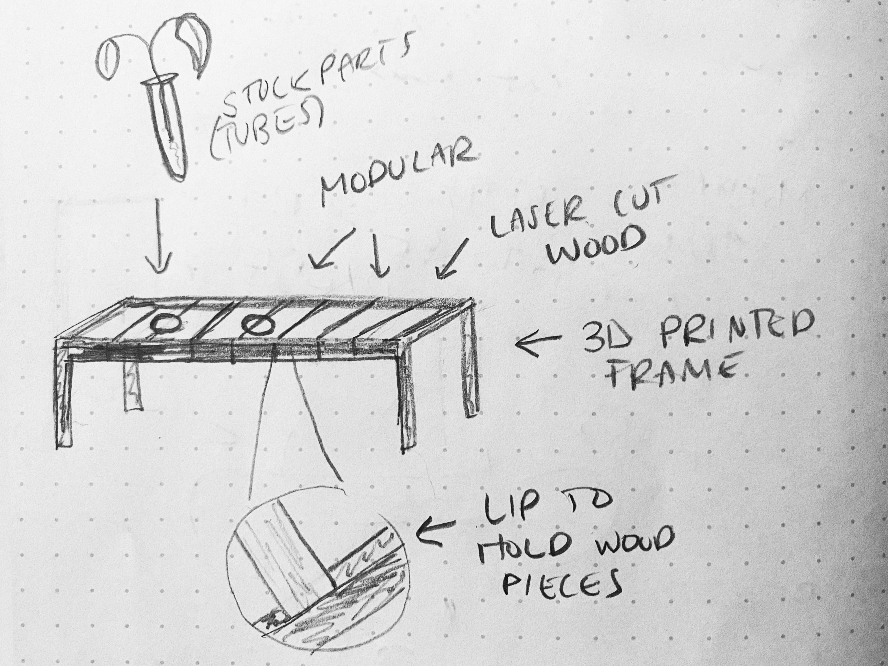
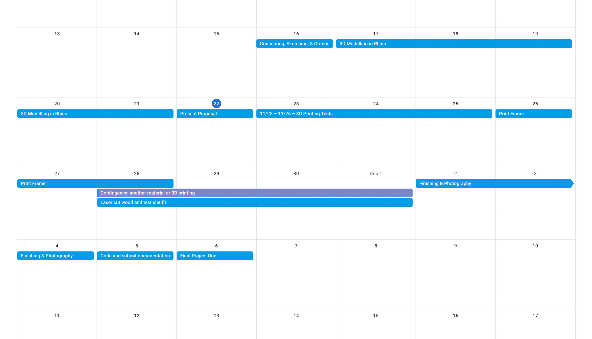
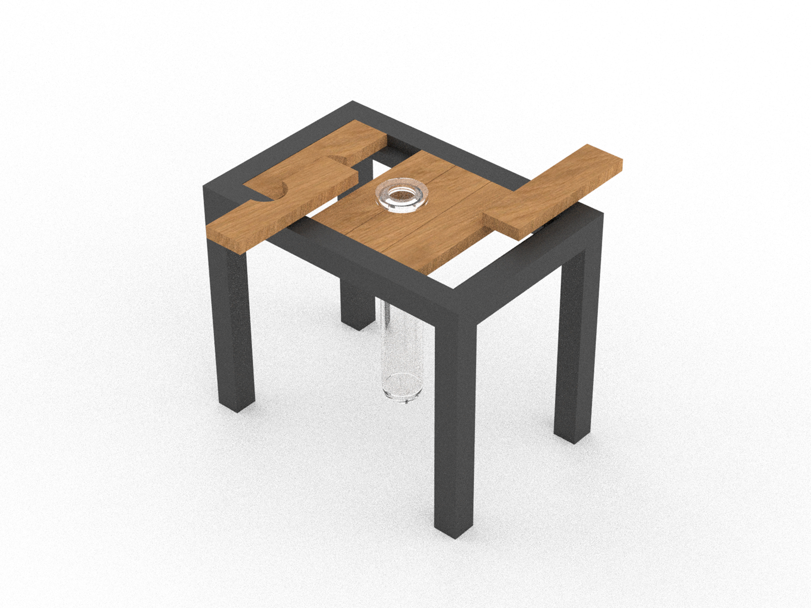
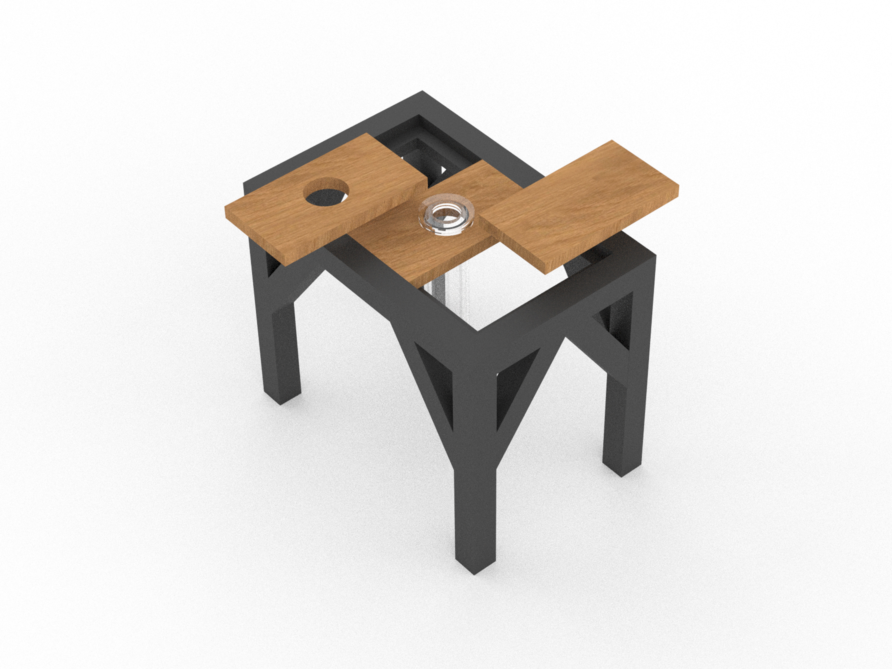

Concept
Propagation Station
Use Case
A propagation station is essentially a “shelf” for propagating plants. Propagating plants is the process of taking a cutting, placing it in water/sunlight, and growing roots until you can plant it.
Plants from plants!
Context
I have plants in random jars taking up my windowsill currently, and I want to make something that will look nicer. There's only one cup in this picture because I just planted my other propogated plants.
Breakdown of Tasks
- Concepting & Sketching
- 3D Modelling in Rhino
- 3D Printing Frame
- Laser Cutting Slats
- Incorporating Stock Parts (Tubes)
- Finishing and Documentation
Timeline

This timeline was built with ranges to give myself extra time if needed.
11/16 – Concepting, Sketching, & Ordering Materials
11/17 – 11/21 3D Modelling in Rhino
11/22 – Present Proposal
11/23 – 11/25 – 3D Printing Tests
11/26 – 11/28 (or until time to laser cut) – Print Frame
11/28 – 12/1 – Laser cut wood and test slat fit
- Contingency plan 1: Can switch to acrylic or another material if there are issues with wood.
- Contingency plan 2: If this fails, 3D print slats with an interference fit.
12/2 – 12/4 – Finishing & Photography
12/5 – Code and submit documentation
12/6 – Final Project Due
Bill of Materials
11/16 (ASAP)
- Tubes | $10
- Black Filament | $30
- Wood (From Lowes, 1/4 inch thick sheets) | $5-$20
By 12/2
- Wood Stain (Can change color/brand) | ~$8
- Sandpaper | $6
Total: $59-$74
I first created my model in Rhino based on the measurements of my window and rendered it. I made little models of the tubes so I could see what it looks like.
I did model and render the wood slats, but I will be measuring the final 3D piece frame and designing the slats from that for a perfect fit when laser cutting.

During my presentation, Nadya mentioned I should add triangles to the frame for support and make the wood slats holding the tube one piece, so they don't push apart. So, I made those changes to my model.
